书卷气
暖纸墨字，白昼长读
轻盈优雅 · 无拘无束 · 克制留白 · 随心流动
这是一段粗体、斜体、行内代码与高亮共存的正文——输入即渲染，没有预览模式的割裂。
本地优先
文稿就是你硬盘上的一个 .md 文件，不锁进私有数据库，谁也拿不走。
fn atomic_write(path: &Path, text: &str) -> Result<()> {
// 1. 先写临时文件 2. MoveFileExW 原子改名覆盖
// 断电 / 崩溃，都不会把原稿写成半截
}| 语法 | 支持 | 备注 |
|---|---|---|
| KaTeX 公式 | ✓ | 行内 + 块级 |
| Mermaid 图表 | ✓ | 流程图 / 时序图 |
字体按需下载，全格式配色跟随主题。（以下为示意预览）
暖纸墨字，白昼长读
暗而不闷，灯下不刺眼
素净留白，清简克制
一点朱砂，醒目提神
暗底朱色，沉稳有力
干净素白，通用稳妥
青灰山水，静气养神
淡紫柔灰，温柔不腻
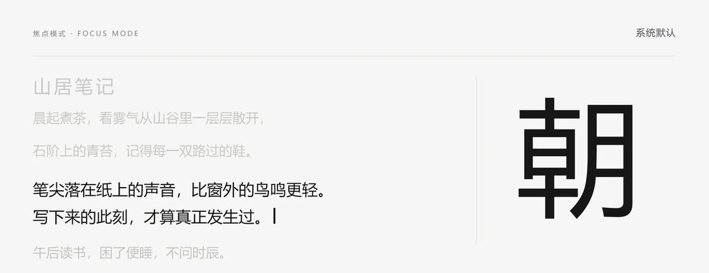
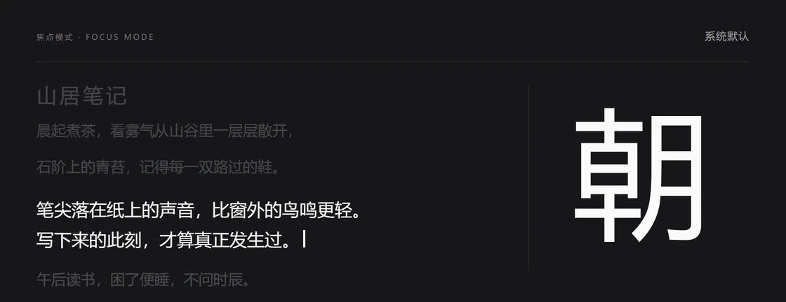
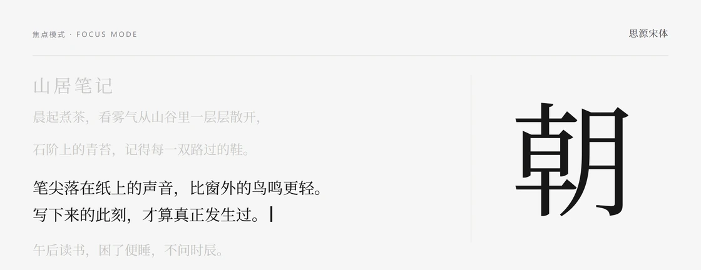
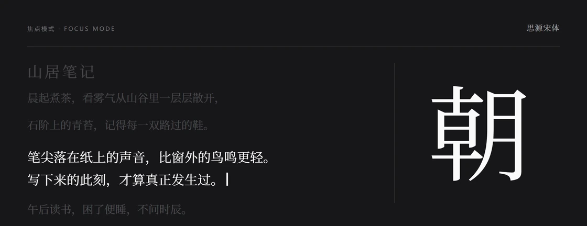
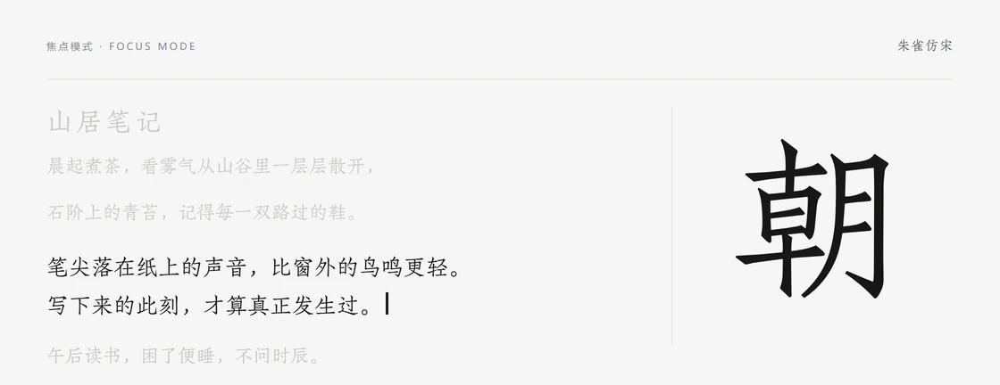
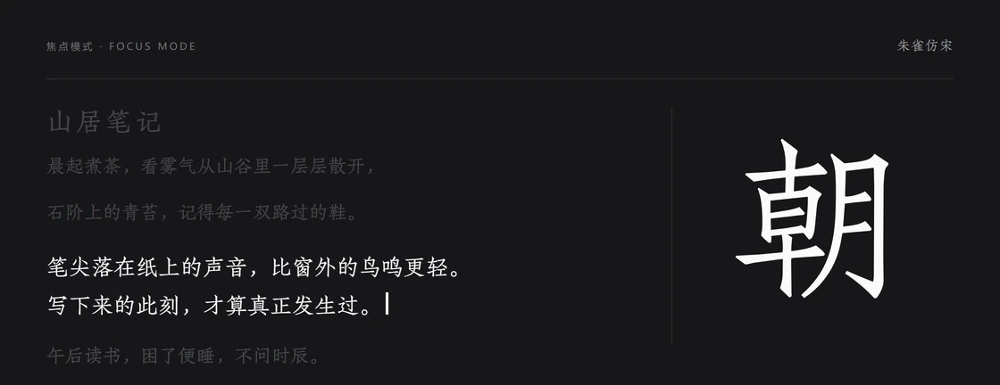
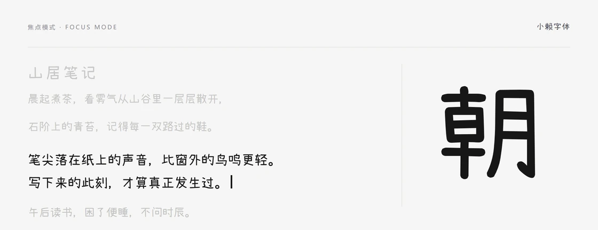
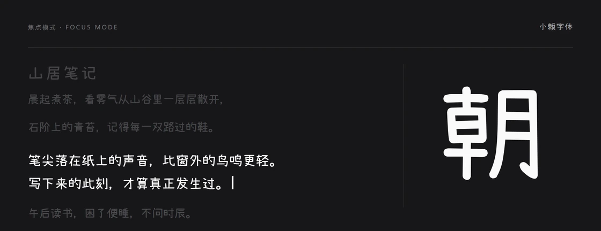
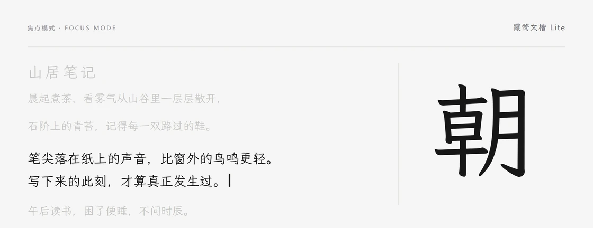
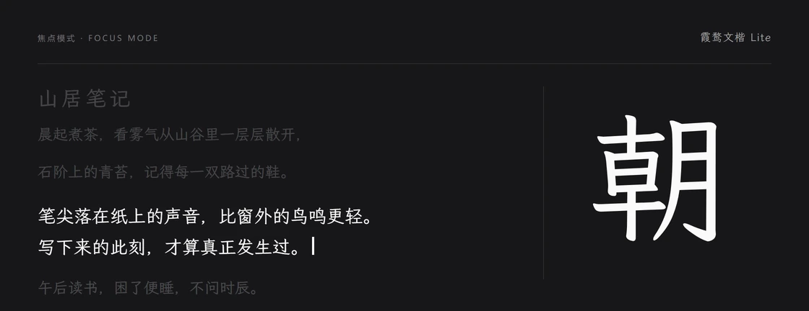
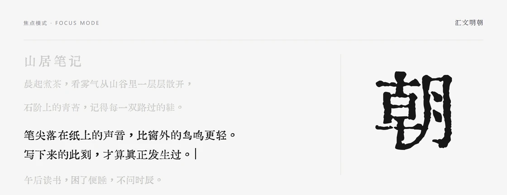
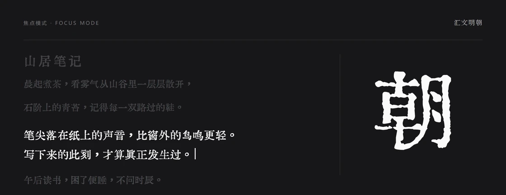
功能克制，舒服的阅读，快乐的打字
不上云，存本地，文稿就是硬盘上的 .md。
没有"编辑态 / 预览态"的割裂。屏幕上看到的就是最终的样子，输入即所见。
不堆功能、不弹引导、不抢注意力。能一眼看懂的，绝不埋进菜单
退到文字后面，不为内容增加负担
让心情更好是唯一的打磨标准
基于 TipTap / ProseMirror，输入即渲染。打 # 出标题，打 ** 出粗体，不用切预览模式。
每篇 .md 一个独立窗口、独立会话。左右并排对照两篇稿子，切窗口内容不丢。
一键把 solo 钉在最前面：查资料、抄片段时不会被别的窗口盖住。标题栏也能自动隐藏，屏幕上只剩字。
输入 / 唤起命令菜单，: 搜 Emoji，[[ 自动补全互链——中文前缀也能唤出。
开启后只有当前段落是"实"的，其余文字整体变淡。世界安静下来，你只看得见正在写的这一句。
实时大纲跳转章节；列表行悬停出箭头，幕布式收起子层级，只看骨架。折叠状态跨文档记忆。
状态栏复制双槽写入：纯文本槽是 Markdown 源码，富文本槽带当前主题的完整排版。贴进公众号编辑器、飞书、语雀，格式不走样。
重开文档、切走再切回，自动回到上次停留的位置。关窗强制落盘，下次接着读。
书卷气、夜读墨色、素笺、朱墨、朱墨暗、纸白、黛青、藕荷……可自定义、可导入导出，明暗跟随系统。
行高、段距、留白都为久读调校，像排过版的书。再搭 6 款精选字体——思源宋体 / 朱雀仿宋 / 霞鹜文楷……用到才下载、断网也能排。字号行高还能自己拉。字对，心情才对。
原子写不写坏原稿、外部改动弹窗确认不静默覆盖、改名同步更新互链。见下方专节。
基于系统 WebView2，安装包轻量；10 万字输入不卡，切文件不重建编辑器，失焦窗口自动降内存。
不只是"能渲染"——还要"存得住"。每一项语法都跑过保真测试，保存重开不变样。
TIP
12 种类型，配色全部跟随主题，重点一眼可见。
注意
Mermaid 节点含中文时，写成 A["文本"] 更稳。
QUOTE
把金句、待办、警示分门别类摆好。
基础格式同样齐全：粗体 / 斜体 / 删除线 / 高亮 / 上下标 / 文字变浅，行内代码可与粗斜体共存。
行内公式：质能方程 E = mc2，与正文无缝同行。
行内 $...$ 与块级 $$...$$ 均支持，KaTeX 懒加载，不拖慢打开速度。
流程图、时序图、脑图直接写在文档里。小提示：节点 label 含中文或特殊字符时，写成 A["文本"] 形式。
| 能力 | 状态 | 说明 |
|---|---|---|
| 列表混排 | ✓ | 任务项与普通项同层 |
| 嵌套任务 | ✓ | 父子层级不丢 |
| 表格对齐 | ✓ | 左 / 中 / 右双向保真 |
GFM 管道表格，支持对齐；列表支持无序 / 有序 / 任务 / 嵌套 / 同层混排，内容一项不丢。
把零散的 .md 连成自己的小网：输入 [[产品构想]] 即自动补全，链接不存在可一键创建；拖文件进文档即成链。
脚注也齐：在句尾放一个标记[1]，文末自动归位。
[1] 脚注定义，支持引用与跳转。
文档头部还能放 Frontmatter YAML 元数据，读取还原不污染正文。
重命名文档时，同目录内的互链可批量更新——带预览确认，原子改写，不会改坏文件。
本地优先不只是口号，是四道写进代码里的底线。
保存时先写临时文件、再原子重命名。断电、崩溃，都不会把原稿"写一半"留给你。
文件在外部被改了？弹窗让你选"强制覆盖"还是保留，绝不偷偷覆盖你的心血。
一整套 round-trip 测试网专门防"保存后格式悄悄变样"——存什么样，打开还什么样。
重命名文档，同目录互链批量更新；先预览、后确认、原子改写，不会改坏一片文件。
如实说明：solo 默认不开启自动保存（可在设置开启，默认 30 秒）。它也不做"崩溃会话自动恢复"。重要文稿，建议打开自动保存。
基于系统 WebView2，不塞私有内核，安装包保持轻量。
10 万字级文档输入不卡，字数统计自动降级显示。
公式、图表懒解析——时分词不渲染，保住打开速度。
失焦窗口自动降级 WebView2 占用，多开不爆内存。
Tauri 2（Rust）——轻量、安全、原生系统集成。
Vue 3 + Pinia + TipTap / ProseMirror + Tailwind CSS。
前端统一经 services/tauri/ 调用 Rust 命令，返回结构化 DTO 与错误类型。
改解析 / 序列化 / schema 前必跑多套保真测试网，专防静默丢内容这类最贵的事故。
github.com/jloft198479-cyber/solo · Apache License 2.0
不是。solo 是单文件 Markdown 编辑器，专注"把字写好、读得舒服"。双向链接只帮你把同目录 .md 连起来，不做图谱、不做数据库、不做云同步。
solo 刻意不做 AI。它是工具，不负责"处理你的知识"——稿子随时能直接用 Markdown 打开、随时能改。真要用 AI，把 .md 文件丢给 AI 就行，没必要在文档里再绕一道。多此一举的事，solo 不做。
存在你电脑上你指定的文件夹，就是一个个 .md 文件。solo 不会上传任何内容到云端。
solo 有一整套保真测试专门防这个。粘贴、复制、保存、重开的格式都经过校验契约，目标是"你写进去什么样，打开还是什么样"。
暂未支持，这里如实说。不过日常分发用不上 PDF：复制时剪贴板会同时写入两个槽——纯文本是 Markdown 源码，富文本是带当前主题排版的所见即所得，贴进公众号编辑器、飞书、语雀都不乱格式。真要 PDF，用"复制为 Markdown"交给其他转换器。
自动更新的检查端点固定在 GitHub，国内网络下可能超时或失败——这不意味着有新版本，更不会影响你的文稿（所有更新都是覆盖安装，文件本来就在你自己硬盘上）。拿不准时，直接打开 Releases 页面手动下载最新版，安装即可。
默认关闭，可在设置开启（默认 30 秒、下限 5 秒）。习惯随手关窗口的话，建议打开。
当前只发 Windows 版，手机端不在范围内。架构基于 Tauri 2，macOS / Linux 在技术路线考量中。
节点 label 含中文或特殊字符时，写成 A["文本"] 形式即可正常渲染。
是，Apache License 2.0，代码可查。
扫码添加，聊聊 solo 或提需求
微信号 fzz198479